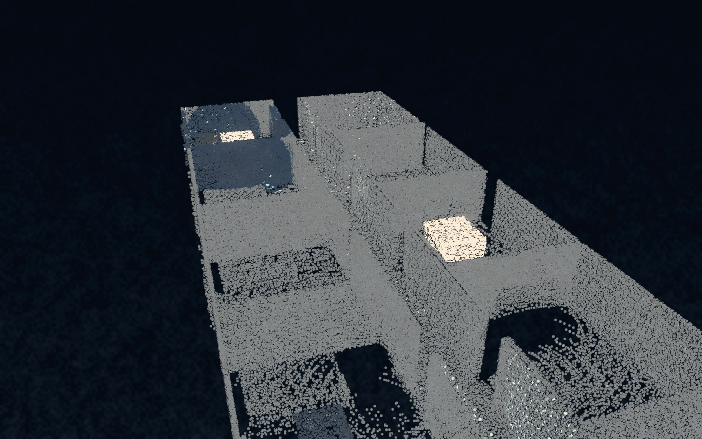
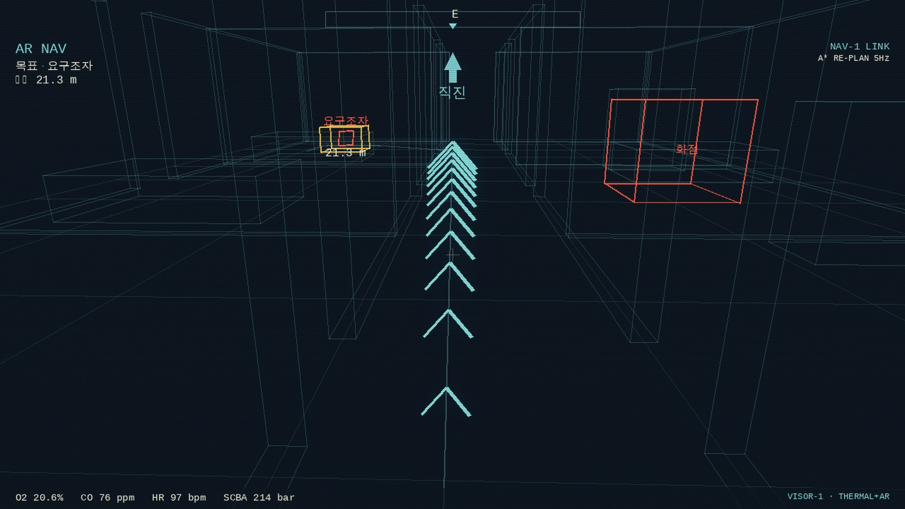

FRIZE는 9개 기능 도메인으로 구성됩니다. 모든 구성요소는 단일 실시간 메시지 망 위에서 동작하며, 콕핏은 상태를 통합하고 명령을 안전 검문 후 각 장비로 중계합니다.
드론·고글 스캔(월드좌표 포인트)을 융합해 매끈한 표면 모형을 만듭니다. 시선 카빙으로 자유공간과 미탐사를 구분하고, 미탐사 영역은 트윈에 구멍으로 남아 탐사 목표가 됩니다.

비전 AI가 드론·고글 영상을 장면 단위로 이해해 위험을 분류합니다. 픽셀 룰이 아니라 모델이 판단하고, 모든 탐지에 '왜'를 동반합니다. 발견된 인원은 위급도·위험구역 근접·신뢰도로 구조 우선순위가 산정됩니다.

모든 명령은 허용 / 확인필요 / 거부로 판정되고, 항상 사람이 읽는 사유가 붙습니다. 아래는 현재 빌드의 실제 규칙입니다.